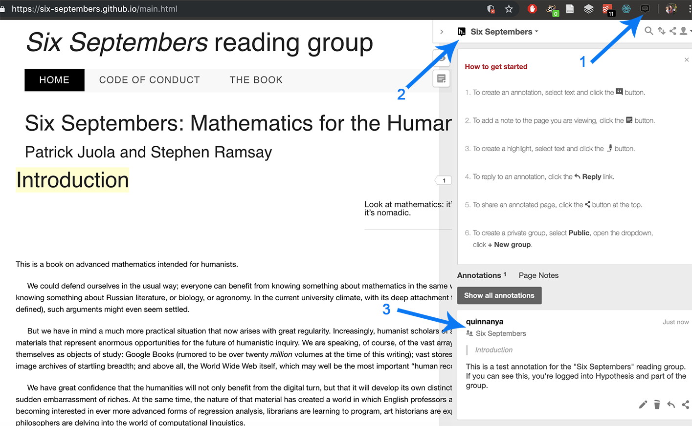

This is the website for the Six Septembers: Mathematics for the Humanist reading group. We started off (June - December 2019) reading the book by the same name, available on this site for group annotation using Hypothesis, by Patrick Juola and Stephen Ramsay, and also
available here as a PDF.
From March - December 2020, we'll be working on understanding neural networks. We'll have two tracks: the applied track that will meet for the first half-hour of our meetings, and the the math track that will meet for the second half-hour. All are welcome to attend either or both tracks! Join the mailing list for scheduling information and email updates
Our first meeting is scheduled for Friday, March 6 starting at 4 Eastern, 1 Pacific, at https://stanford.zoom.us/j/216711982.
The applied track will be working through Grokking Deep Learning by Andrew Trask. The math track will be working through parts of the Deep Learning book by Ian Goodfellow, Yoshua Bengio, and Aaron Courville. For another take on the material, both groups are encouraged to work through the Elements of AI course (one chapter per month for the first six months).
To spare everyone the hassle of Yet Another Slack Workspace, we'll be creating channels on the Digital Humanities Slack for both the math track and the applied track. Email Quinn at qad@stanford.edu if you need an invite.
Machine learning syllabus
March 2020
- Elements of AI Ch. 1: What is AI?
- Applied track (Grokking Deep Learning):
- Ch. 1: Introduction to deep learning: why you should learn it
- Ch. 2: Fundamental concepts: how do machines learn?
- Ch. 3: Introduction to neural prediction: forward propagation
- Math track (Deep Learning)
- Ch. 2: Linear algebra, Ch. 3: Probability and Information Theory (review)
- Ch. 4: Numerical computation
May 2020
- Elements of AI Ch. 2: AI problem solving
- Applied track (Grokking Deep Learning):
- Ch. 4: Introduction to neural learning: gradient descent
- Ch. 5: Learning multiple weights at a time: generalizing gradient descent
- Math track (Deep Learning)
- Ch. 5: Machine learning basics
- Ch. 6: Deep feedforward networks
June 2020
- Elements of AI Ch. 3: Real world AI
- Applied track (Grokking Deep Learning):
- Ch. 6: Building your first deep neural network: introduction to back propagation
- Ch. 7: How to picture neural networks: in your head and on paper
- Math track (Deep Learning)
- Ch. 7: Regularization for deep learning
July 2020
- Elements of AI Ch. 4: Machine learning
- Applied track (Grokking Deep Learning):
- Ch. 8: Learning signal and ignoring noise: introduction to regularization and batching
- Ch. 9: Modeling probabilities and nonlinearities: activation functions
- Math track (Deep Learning)
- Ch. 8: Optimization for training deep models
August 2020
- Elements of AI Ch. 5: Neural networks
- Applied track (Grokking Deep Learning):
- Ch. 10: Neural learning about edges and corners: intro to convolutional neural networks
- Ch. 11: Neural networks that understand language: king - man + woman = ?
- Math track (Deep Learning)
- Ch. 9: Convolutional networks
September 2020
- Elements of AI Ch. 6: Implications
- Applied track (Grokking Deep Learning):
- Ch. 12: Neural networks that write like Shakespeare: recurrent layers for variable-length data
- Ch. 13: Introducing automatic optimization: let’s build a deep learning framework
- Math track (Deep Learning)
- Ch. 10: Sequence modeling: Recurrent and recursive nets
October 2020
- Applied track (Grokking Deep Learning):
- Ch. 14: Learning to write like Shakespeare: long short-term memory
- Math track (Deep Learning)
- Ch. 11: Practical methodology
- Ch. 13: Linear factor models
November 2020
- Applied track (Grokking Deep Learning):
- Ch. 15: Deep learning on unseen data: introducing federated learning
- Math track (Deep Learning)
December 2020
- Applied track (Grokking Deep Learning):
- Ch. 16: Where to go from here: a brief guide
- Math track (Deep Learning)
- Ch. 15. Representation learning
- Planning for 2021
Next steps beyond machine learning
Not into machine learning? No problem! We envision this working group as an ongoing thing, and towards the end of 2020 we'll put out a survey for what topic to work through next year. Statistics and corpus linguistics have both come up as possibilities, but we're open to other ideas too!
Joining the reading group
To join the reading group, read our code of conduct and do any or all of the following:
- Join the mailing list for email updates (e.g. for new Doodle polls to plan synchronous meetings)
- Join the #6septembers-math and/or #6septembers-applied channels of the DH Slack.
Got questions? Email Quinn Dombrowski at qad@stanford.edu or tweet @quinnanya.
Want to talk about it on Twitter? Use the hashtag #6septembers.
Getting started with Hypothesis
Follow the instructions on the Hypothesis site for creating an account on Hypothesis and installing the browser plugin. Once you've logged in, you can join the Six Septembers group.
Go to the online version of Six Septembers, and click the Hypothesis icon in your browser (1). Make sure that you're looking at annotations in the Six Septembers group (2); if you see something other than "Six Septembers" in the upper left area of the Hypothesis pane, click on that text and select "Six Septembers". If you don't see "Six Septembers" listed as an option, make sure you've joined the Six Septembers group. You should be able to see the test annotation (3) if everything is set up correctly. Once you can see that, you can start adding your own annotations to the text. These annotations will only be visible to members of the "Six Septembers" group.
